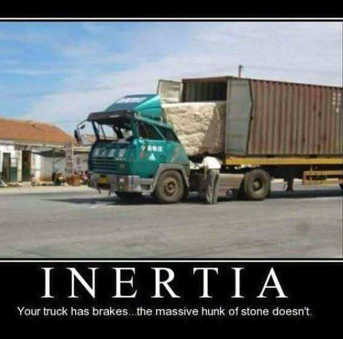
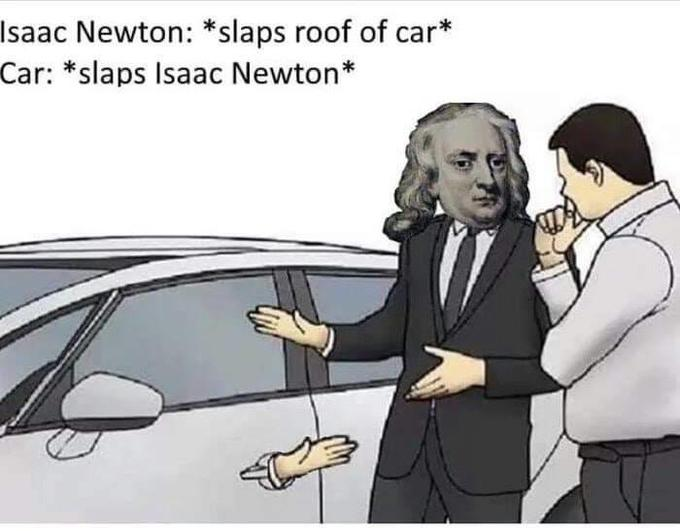

Newton’s Laws
Newton’s first law
The fall of the dinosaurs
Trampoline with leaves
At the Kibo ISS module
Rollerblades on a moving table
What is Inertia?

Newton’s second law
Man with superhuman strength
Inside the ISS

Whack-a-Stack
Apollo 15 hammer-feather drop
Newton’s third law
Newton cartoon
